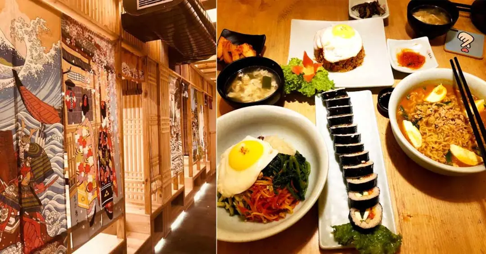
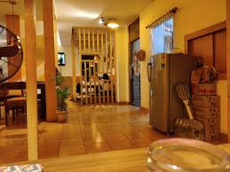
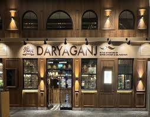

TOMATOZ - ONE STOP SOLUTION FOR FOODIES
Home
Restaurants
Dine Out
About
Contact Me
Restaurants Lists
1. Gangnam Restaurant
Ratings -- 4.1/5

2. Lah Kitchen
Ratings -- 4.4/5

>
3. Daryaganj Restaurant
Ratings -- 4.6/5

>
4. The Big Chill
Ratings -- 4.5/5
>
5. The Yellow Chilli
Ratings -- 4.3/5
>
.jpg) >
>
.jpg) >
>